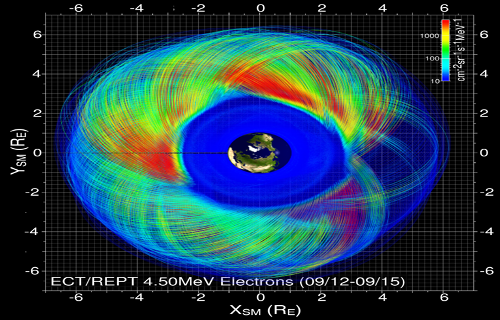
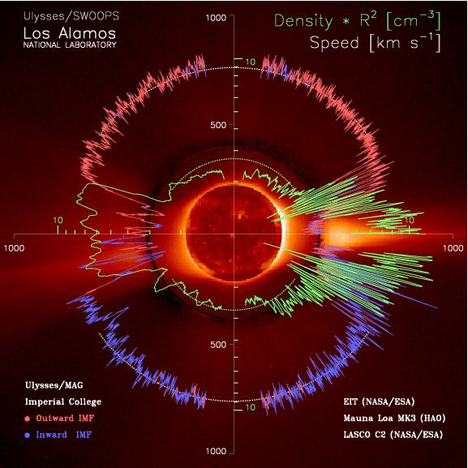
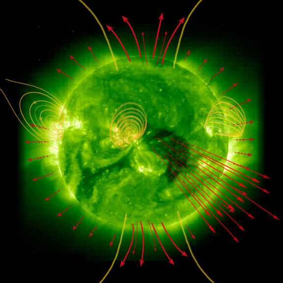

Combination of Machine Learning and physics-based simulation to forecast the perturbation of the magnetic field on the ground, that is responsible for geomagnetic induced current (GIC). GIC can damage electrical power systems and transformers and lead to regional black-outs. The project uses historical ground-based magnetometer data and the output of the Geospace model that is operational at NOAA/SWPC.
 5-years project funded as a personal fellowship through a NWO-VIDI grant. In this project we use Bayesian parameter estimation and Physics-Informed Machine Learning to enhance physics-based simulations of high-energy electron flux in the radiation belt. The goal is to be able to predict the fluxes of killer electron along a given satellite orbit.
AIDA (Artificial Intelligence Data Analysis) is a scientific project coordinated by Prof. Giovanni Lapenta at KU Leuven and funded by the European Community, as part of the Horizon 2020 program (COMPET-4). AIDA has a total cost of 1.5 million euro and involves researchers from universities and companies in 6 countries: Belgium, Netherlands, France, Italy, Greece and the USA. This interdisciplinary collaboration will be devoted to artificial intelligence, applied to the analysis of space data.
 Classifying the solar wind in different 'types' is important to improve our statistical studies of solar wind properties. We are studying the classification of solar wind types with respect to their solar origin, by using Gaussian Processes. We have classsified about 300,000 hours of solar wind data taken form the OMNI2 database. The paper is available here. The data and software is freely available here.
We are working on forecast algorithms to predict the Dst geomagnetic index, based on solar wind velocity and magnetic field measured at the L1 point. The latest method employs a combination of Gaussian Processes and Long Short-Term Memory Neural Network. It outputs a distribution probability of future Dst values, up to 6 hours ahead. Publications:
 We are developing algorithms that forecast the speed and magnetic field of the solar wind, a few days ahead of the arrival time, combining physics-based inputs and data-driven models. The latest model is a probabilistic model that predicts the 'what and when'. See a poster of this work here
We are employing information theory tools to understand the physical coupling between solar wind and magnetosphere. This will help establish the relative importance of exogenous parameters, such as solar wind velocity, flux and interplanetary magnetic field, in predicting local flux enhancement or geomagnetic storm commencement in the radiation belts.
Publications: